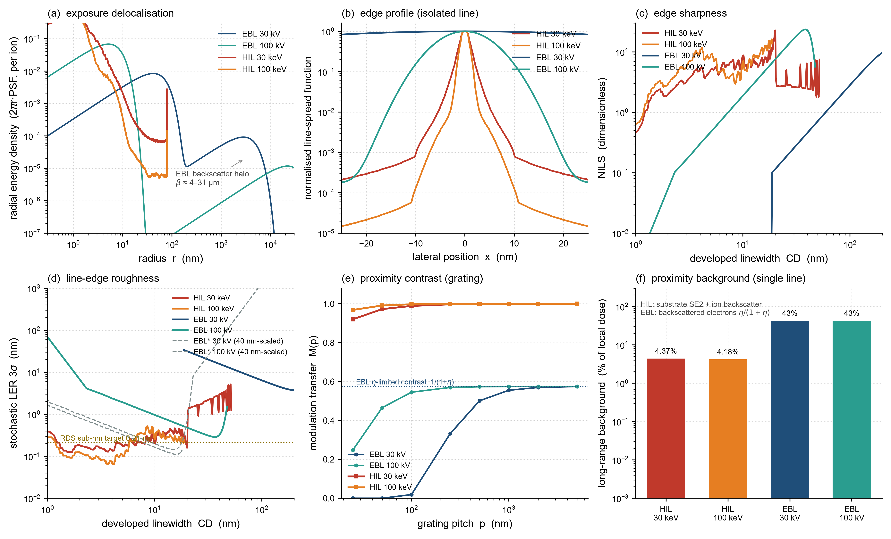

scripts/compare_hil_ebl.py两支束流走同一套显影边缘模型：显影边界是线扩散函数跨越抗蚀剂阈值的位置， 像对数斜率 NILS = CD·|dlnE/dx|，随机 LER 用项目既有公式
LER(3σ) = 3·CD / (NILS·√(n_A·a_eff)) = 3·σ_edge / √(n_A·a_eff)
其中 n_A = ρ_gel·t/ω_SE = 30 events/nm²、a_eff = 9.17 nm² 两支束流取同一组值（抗蚀剂化学相同），因此差异完全归因于 PSF 形状。 又因显影边界只取决于「阈值/剂量」之比，扫描该比值等价于扫描剂量， 所得 (CD, NILS) 轨迹与绝对剂量标定无关——这才使 He⁺ 蒙特卡洛的绝对单位（eV/nm/ion） 与电子的任意单位可以直接对照。注意 LER 可化简为 3σ_edge/√(n_A·a_eff)， CD 只通过"边缘落在哪里"进入。

| 束流 | LSF FWHM (nm) | PSF r50 (nm) | PSF r90 | PSF r99 | η (背散射比) | 长程本底占比 |
|---|---|---|---|---|---|---|
| HIL 30 keV | 2.30 | 1.12 | 3.37 | 11.11 | — | 4.37% |
| EBL 30 kV | 98.8 | 84.0 | 4.8 µm | 7.7 µm | 0.74 | 42.5% |
| HIL 100 keV | 1.90 | 0.87 | 1.87 | 5.62 | — | 4.18% |
| EBL 100 kV | 12.2 | 10.4 | 37.5 µm | 60.4 µm | 0.74 | 42.5% |
读法：EBL 的 r90/r99 落在 µm 量级——那不是"分辨率"，而是 背散射晕（42.5% 的能量铺在 β 尺度上）。对孤立线而言该晕近乎均匀、不改变局部梯度， 但它意味着近一半的入射能量并不贡献图形对比度，并造成图案密度依赖的邻近效应。 HIL 无此通道。
| 束流 | 最佳 LER 3σ (nm) | 对应 CD (nm) | 边缘模糊 σ_edge (nm) |
|---|---|---|---|
| HIL 30 keV | 0.126 | 1.6 | 0.70 |
| HIL 100 keV | 0.064 | 3.7 | 0.35 |
| EBL 30 kV | 3.747 | 200.0 | 20.72 |
| EBL 100 kV | 0.288 | 36.5 | 1.59 |
固定线宽下的随机 LER 3σ（单位 nm）：
| 束流 | CD = 5 nm | CD = 10 nm | CD = 20 nm | CD = 50 nm | CD = 100 nm |
|---|---|---|---|---|---|
| HIL 30 keV | 0.18 | 0.21 | 0.16 | 4.21 | — |
| HIL 100 keV | 0.10 | 0.26 | — | — | — |
| EBL 30 kV | — | — | 31.71 | 12.70 | 6.41 |
| EBL 100 kV | 1.93 | 0.97 | 0.48 | — | — |
调制传递函数 M(p) 直接给出图形对比度。EBL 因 η 较大，细光栅的对比度被压制在 1/(1+η) = 0.57 附近；HIL 则趋近 1。这与参考文献（Langmuir 2025, 41, 29152， Si 光栅的 HIL 制备）中"氦离子光刻邻近效应可忽略"的观察一致。
| M(p) | 25 nm | 50 nm | 100 nm | 250 nm | 500 nm | 1000 nm | 2000 nm | 5000 nm |
|---|---|---|---|---|---|---|---|---|
| HIL 30 keV | 0.920 | 0.973 | 0.989 | 0.997 | 0.999 | 1.000 | 1.000 | 1.000 |
| EBL 30 kV | 0.000 | 0.000 | 0.019 | 0.332 | 0.501 | 0.555 | 0.570 | 0.575 |
| EBL 100 kV | 0.248 | 0.466 | 0.545 | 0.570 | 0.574 | 0.574 | 0.575 | 0.575 |
metrics.converged_lsf() 原先只返回正半轴，导致 CD 被当作半宽、
NILS 低估 2×（LER 不受影响）。已改为镜像为完整对称网格。results.json；复现 python scripts/compare_hil_ebl.py。
参考文献：M. Chen et al., Nanofabrication of Silicon Gratings Enabled by Vapor-Phase,
Highly Uniform Self-Assembled Monolayer Resists, Langmuir 2025, 41(43), 29152；
EBL 双高斯参数见 Proximity Effect in E-beam Lithography, Georgia Tech Nanolithography group (nanolithography.gatech.edu/proximity.pdf), Table I after ref. [13]; alpha-thickness scaling from its Eq. (10).